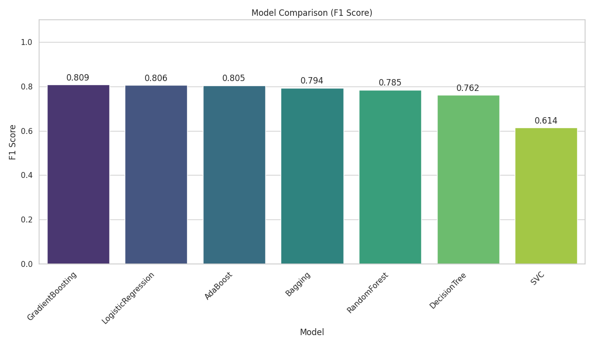
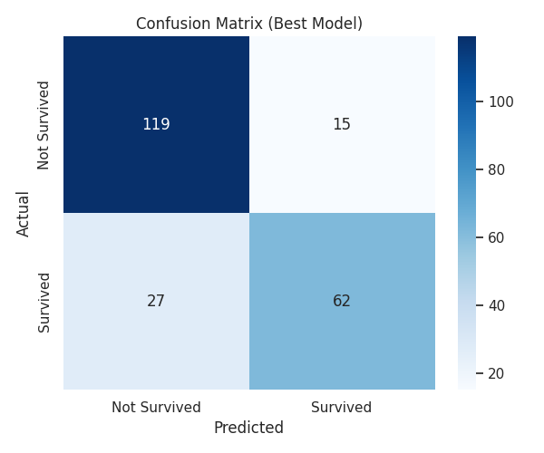

ITMO Engineering Practices Course: Titanic Classification Pipeline


Проектная работа в рамках курса Engineering Practices for ML (ITMO). Полноценный пайплайн машинного обучения для классификации датасета Titanic с использованием DVC, ClearML, Pydantic, Docker и автоматической генерацией отчетности.
📋 Отчет по ДЗ 6: Документация и отчеты
В этом релизе полностью реализованы требования домашнего задания №6.
1. ✅ Техническая документация (2 балла)
- Инструмент: Использован MkDocs с темой Material.
- Полный API Reference: Настроена автоматическая генерация документации из docstrings для всех модулей проекта с помощью
mkdocstrings:- 🛠 Configuration:
src.config_manager,src.schemas - 🧹 Data Processing:
src.preprocess - 🚂 Training:
src.train_single,src.train - 🏆 Selection & Eval:
src.select_best,src.eval - ⚙️ Utilities:
src.utils,src.result_logger,src.tg_bot_notifier
- 🛠 Configuration:
- Руководства: Написан
Quick Startи описание системы конфигурации.
2. ✅ Публикация в GitHub Pages (3 балла)
- CI/CD: Настроен GitHub Actions workflow
.github/workflows/gh-pages.yml. - Автоматизация: При пуше в ветку
mainпроисходит:- Установка зависимостей.
- Генерация актуального отчета (
src/generate_report.py). - Сборка сайта MkDocs.
- Деплой артефактов в ветку
gh-pages.
- Результат: Документация доступна онлайн (см. Environment URL в репозитории).
3. ✅ Отчеты об экспериментах (2 балла)
- Генерация: Реализован скрипт
src/generate_report.py, который парсит JSON-метрики. - Визуализация:
- 📊 Leaderboard: Сравнительная таблица всех обученных моделей (сортировка по F1).
- 📈 Plots: График сравнения метрик F1 Score для всех кандидатов.
- 🟦 Confusion Matrix: Визуализация ошибок для Production-модели.
- Интеграция: Отчет генерируется автоматически при запуске пайплайна и встраивается в страницу Experiment Report.
4. ✅ Воспроизводимость (1 балл)
- Инструкции: Полное описание установки, настройки окружения и запуска приведено ниже.
- DVC: Весь пайплайн (препроцессинг -> обучение -> выбор -> оценка -> отчет) запускается одной командой
dvc repro. - ClearML Второй вариант: запуск пайплайна через ClearML:
python src/pipeline_controller.py - Docker: Настроена среда ClearML через
docker-compose.
🚀 Быстрый старт (Reproducibility)
Для воспроизведения результатов выполните следующие шаги:
1. Клонирование и установка
git clone https://github.com/AkiRusProd/itmo-enginiring-practices-ml.git
cd itmo-enginiring-practices-ml
# Создание виртуального окружения
python3 -m venv .venv
source .venv/bin/activate # Windows: .venv\Scripts\activate
# Установка зависимостей (pip или poetry)
pip install -r requirements.txt
# или
poetry install
2. Настройка окружения
Создайте файл .env в корне проекта (см. .env.example). Это необходимо для интеграции с ClearML и уведомлений в Telegram.
3. Запуск пайплайна
Используйте DVC для запуска полного цикла воспроизведения:
dvc repro
После успешного выполнения:
1. Лучшая модель будет сохранена в models/best_model.pkl.
2. Метрики появятся в папке metrics/.
3. Отчет с графиками будет сгенерирован в docs/experiments.md.
4. Просмотр документации локально
Чтобы увидеть сгенерированный отчет и API документацию:
mkdocs serve
Перейдите по адресу http://127.0.0.1:8000.
📂 Структура проекта
Directory structure:
├── .github/
│ └── workflows/
│ └── gh-pages.yml # CI/CD: Сборка и деплой документации
├── config/ # Система конфигурации (Hydra-like)
│ ├── params.dev.yaml # Профиль разработки
│ ├── params.prod.yaml # Профиль продакшена
│ └── params.test.yaml # Профиль тестирования
├── data/
│ ├── processed/ # Обработанные данные
│ └── raw/
│ └── dataset.csv.dvc # Исходные данные под DVC
├── docs/ # Документация проекта (MkDocs)
│ ├── assets/images/ # Сгенерированные графики для отчетов
│ ├── reference/ # API Reference (автогенерация)
│ │ ├── config.md # Док: Конфигурация
│ │ ├── data.md # Док: Обработка данных
│ │ ├── eval.md # Док: Оценка и отчетность
│ │ ├── pipeline.md # Док: Пайплайн контроллер
│ │ ├── select.md # Док: Выбор модели
│ │ ├── train.md # Док: Обучение
│ │ └── utilities.md # Док: Утилиты и логирование
│ ├── deployment.md
│ ├── experiments.md # Автоматически генерируемый отчет
│ ├── index.md # Главная страница
│ ├── mkdocs.yml # Конфиг вложенной документации
│ └── quickstart.md
├── examples/
│ └── config_composition_examples.py
├── metrics/ # Метрики экспериментов (JSON)
│ ├── best_model_advanced_metrics.json
│ ├── best_model_metrics.json
│ └── train_models/ # Метрики каждой отдельной модели
├── models/ # Сериализованные модели (.pkl)
├── notebooks/
├── src/ # Исходный код
│ ├── __init__.py
│ ├── base_config.py # Инициализация конфига
│ ├── config_manager.py # Менеджер конфигурации и профилей
│ ├── eval.py # Оценка лучшей модели
│ ├── generate_report.py # Генерация Markdown отчета
│ ├── pipeline_controller.py # Оркестрация ClearML пайплайна
│ ├── preprocess.py # Очистка и подготовка данных
│ ├── result_logger.py # Логирование в файл/консоль
│ ├── schemas.py # Pydantic схемы валидации
│ ├── select_best.py # Выбор лучшей модели (Champion)
│ ├── tg_bot_notifier.py # Telegram-бот для уведомлений
│ ├── train.py # Скрипт массового обучения (Legacy)
│ ├── train_single.py # Обучение одной модели (шаг пайплайна)
│ └── utils.py # Общие утилиты
├── tests/
│ └── test_data.py
├── .dvcignore
├── .env.example # Пример переменных окружения
├── .pre-commit-config.yaml
├── docker-compose.clearml.yml # Развертывание ClearML
├── Dockerfile
├── dvc.yaml # DVC Pipeline (DAG)
├── LICENSE
├── Makefile # Команды автоматизации (lint, format)
├── mkdocs.yml # Основной конфиг MkDocs
├── params.yaml # Базовые параметры эксперимента
├── pyproject.toml # Зависимости Poetry
└── requirements.txt # Зависимости pip
📊 Пример генерируемых отчетов
Скрипт анализа автоматически строит графики, которые попадают в документацию:
| Сравнение моделей (F1 Score) | Матрица ошибок (Best Model) |
|---|---|
 |
 |
🛠 Разработка
В проекте используется Poetry для управления зависимостями и pre-commit для обеспечения качества кода (Black, Isort, Ruff, Mypy, Bandit).
- Setup:
bash # Установка хуков (один раз) pre-commit install - Code Quality (Lint & Format):
Запуск всех проверок (Black, Isort, Ruff, Mypy, Bandit) вручную:
bash pre-commit run --all-files - Documentation:
Создайте новый
.mdфайл вdocs/и добавьте ссылку на него в секциюnavфайлаmkdocs.yml.
License
MIT